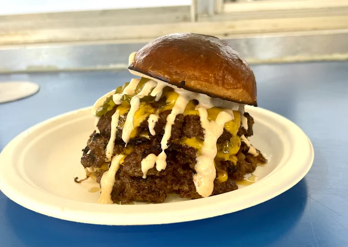
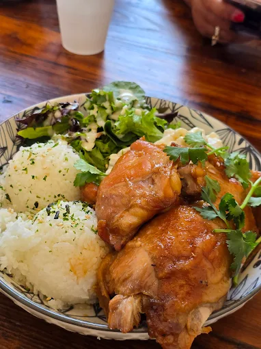
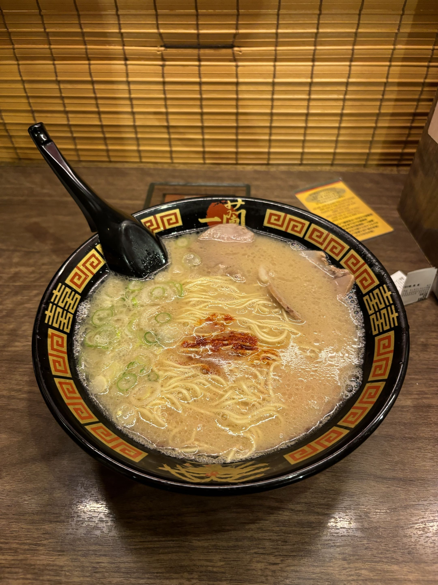

A personal food journal
My Food Adventures
Hi! I'm someone who loves trying new foods from all around the world. Whether it's street food from a local market or a dish from a restaurant I've never been to before, I'm always excited to taste something new. Food is one of the best ways to explore different cultures!
Foods I've Tried and Loved
-
Smash That Burger
Triple Smash Burger

-
Enseamada Cafe
Chicken Adobo

-
Ichiran Ramen
Ramen

Color Accessibility
This page uses a teal + brown palette — avoiding red/green pairs — so it stays readable under
deuteranopia and protanopia (the most common forms of color blindness, affecting ~8% of males).
All text meets WCAG 2.2 AA contrast (min 4.5:1). Most elements meet AAA (7:1+).
Color is never the sole way information is conveyed.